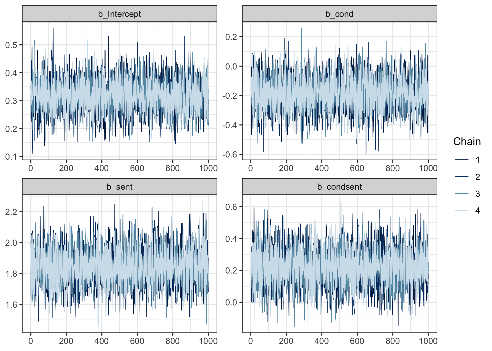
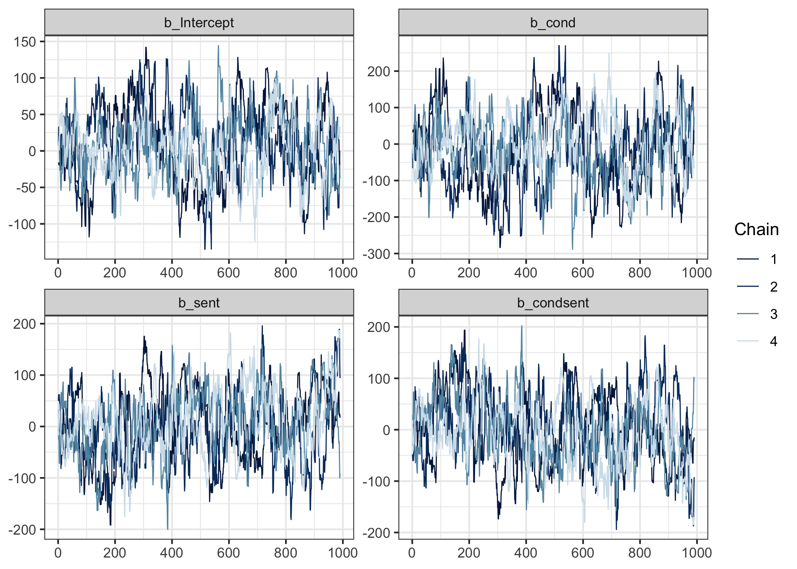
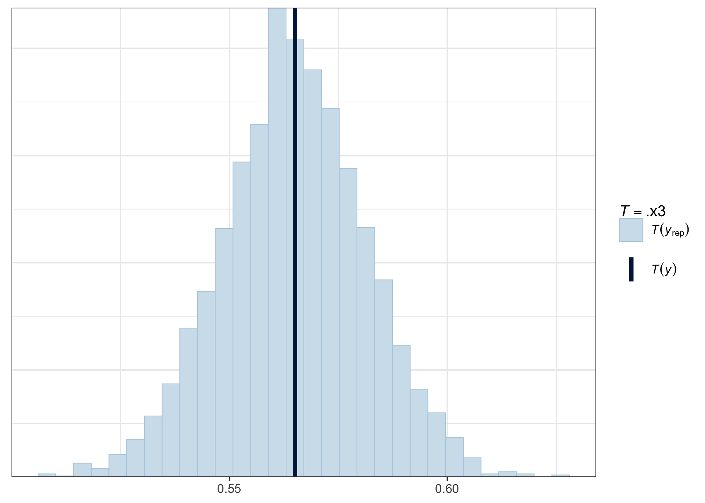

acc_fit <- brm(sentence_accepted ~ cond + sent + condsent,
data = acc,
family = bernoulli(),
prior = c(
prior(normal(0, 1.5), class = Intercept),
prior(normal(0, 1), class = b)
),
backend = 'cmdstanr'
)Fitting and checking the model
On this page, we’ll focus on:
- Fitting the model (finally!)
- A couple diagnostics for checking model convergence.
- Posterior predictive checks: How well does the model capture the generative process behind the data?
Our model
In mathematical notation, the model we’ll fit is the following.
\[ \begin{aligned} \text{acc} & \sim Bernoulli(\theta) \\ logit(\theta) & = \alpha + (\beta_1 \cdot cond) + (\beta_2 \cdot sent) + (\beta_3 \cdot cond \cdot sent)\\ \alpha & \sim Normal(0, 1.5) \\ \beta_1 & \sim Normal(0, 1) \\ \beta_2 & \sim Normal(0, 1) \\ \beta_3 & \sim Normal(0, 1) \\ \end{aligned} \]
In brms notation, it looks like this:
Copy this code into your notebook and run it to finally fit our model 🥳 (It might take a minute or two, so be patient.)
Checking convergence
Recall from yesterday that the Markov Chain Monte Carlo chains that sample from the posterior are moving around the posterior landscape, trying to find where the bulk of the probability mass is. Sometimes they might never find it, or might not do so reliably. When the chains don’t properly sample from the posterior, we say the model has not converged.
Ideally, the chains will “mix”: in other words, all four chains will be sampling from the same region of the posterior. There are a couple ways to tell that the chains are mixing properly.
“Fat hairy caterpillars”
Run the following code to produce so-called “trace plots”.
mcmc_trace(acc_fit,
pars = c('b_Intercept', 'b_cond', 'b_sent', 'b_condsent'))
Trace plots track where the four chains were as they traversed the posterior during sampling. The y axis represents the values of the posterior, and the x axis shows the sample indices (each chain drew 1,000 samples).
If the chains mixed well, then in the words of Shravan Vasishth, the trace plots should look like “fat hairy caterpillars”. And these ones do!
For comparison, here’s an example of some that don’t so much.

These still mix a little, but they don’t overlap quite as densely as the previous ones.
In even worse scenarios, you might also sometimes see chains that get stuck in one part of the posterior and never mingle with the others: these show up on a trace plot as a straight horizontal line.
But as long as your trace plots look like fat hairy caterpillars, then that’s a good sign 🐛
Rhat = 1.00
The second thing to check is more quantitative. For each parameter, the model gives us a diagnostic measure called Rhat ([ɑɹ hæt]). Rhat is a measure of how well the chains have mixed. It compares the estimates within chains and between chains, and if the chains have mixed well, then the result should be near 1. We consider the model to have converged if all Rhat values are equal to 1.00; even an Rhat of 1.01 should make you suspicious.
In the model summary, there is a column called Rhat. All values in this column should be equal to 1.00. (We’ll look at the other values in this table on the next page!)
summary(acc_fit) Family: bernoulli
Links: mu = logit
Formula: sentence_accepted ~ cond + sent + condsent
Data: acc (Number of observations: 1476)
Draws: 4 chains, each with iter = 2000; warmup = 1000; thin = 1;
total post-warmup draws = 4000
Population-Level Effects:
Estimate Est.Error l-95% CI u-95% CI Rhat Bulk_ESS Tail_ESS
Intercept 0.32 0.06 0.20 0.43 1.00 4147 2917
cond -0.18 0.11 -0.41 0.04 1.00 4133 2921
sent 1.84 0.12 1.62 2.08 1.00 4506 3221
condsent 0.22 0.12 -0.01 0.45 1.00 4438 3089
Draws were sampled using sample(hmc). For each parameter, Bulk_ESS
and Tail_ESS are effective sample size measures, and Rhat is the potential
scale reduction factor on split chains (at convergence, Rhat = 1).If there is any Rhat value greater than 1.00, then it means the chains didn’t mix well enough, and we cannot trust the posterior estimates we’ve been given. For reference, the model that yielded the bad trace plot above had Rhats = 1.04. But these ones look pretty good!
If you do ever fit a model that yields Rhat > 1.00, this page offers some solutions you could try.
OK: our model acc_fit has converged. But there’s one more thing to check before we can trust its estimates: does it do a good job of generating data that looks like the data we observed? One way to find out…
Posterior predictive checks
We’ve encountered the concept of predictive checks before.
- With prior predictive checks, we drew sample values from each parameter’s prior, used those values to define the likelihood, and used that likelihood to generate simulated outcomes.
- Now, with posterior predictive checks, we draw sample values from each parameter’s posterior, and use them to do the exact same thing.
In fact, the processes are so similar that we can use pp_check() again to give us the means of the posterior predictive distributions, and compare them to the mean of the observed data:
pp_check(acc_fit, type = 'stat', stat = mean)
The mean of our observed data (the dark vertical line) is smack in the middle of the posterior predictive distribution of means—hurray! That’s what we want to see.
A little bit off to either side is also OK, but if the observed data were far away from the bulk of the posterior predictive distribution, then that would suggest that we might want to change the model architecture to better reflect the generative process behind the data.
Reassured that the model does a decent job of capturing the data, we continue to the Grand Finale: interpreting and reporting the model’s results.